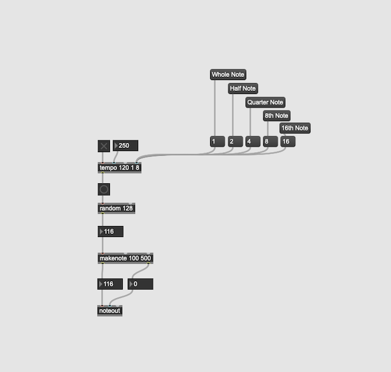

This website demonstrates some html coding of projects I did during the year long extracurricular activity "Creative Coding" in 2021/21. I hope you enjoy the artifacts, it was fun to try new things out.
During the year we did the following projects:
On the topic of audio and multimedia processing, we used Audacity and MAX 8. It was the first time in incorporated these two tooks into my curriculum.
Here is the screenshot of the first MAX8 project: A audio player!

Michael's Audio Recording comes next.
This is a short audio clip done using the Ableton Learning Music website, recorded with Audacity. Its duration was cut down to 5 seconds. Furthermore, I have fade in and fade out have been added with Audacity. The whole process is also described in a small YouTube video, look out for it.
The idea here was to show you how to incorporate audio clipos into your website, it only requires a few lines of HTML.